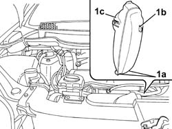
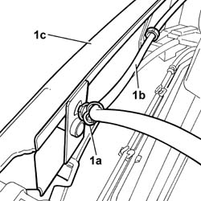
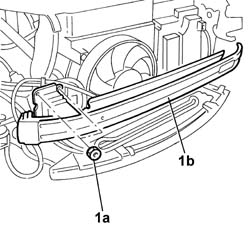
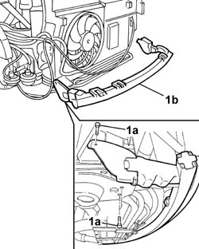
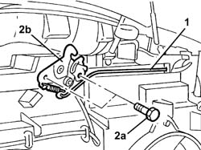
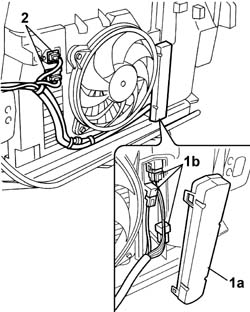
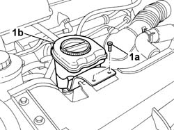
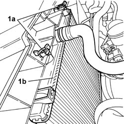
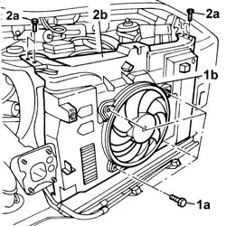

1088B26 ENGINE COOLING RADIATOR PROTECTIONS/AIR DUCTS - ARRANGE
- Path
- Procedures > 10 ENGINE > 1088 ENGINE COOLING > 1088B ENGINE COOLING TANK - R + R > 1088B26 ENGINE COOLING RADIATOR PROTECTIONS/AIR DUCTS - ARRANGE
- Kind
- repair procedure (removal / refitting; the operation number is the code)
- Applies to
- engines: 2.0 16v; all production periods
- Interactive page
- https://sloeber94.github.io/elrnDB-fUlss/en/#/179007179
Applies to: engines: 2.0 16v; all production periods
 Removing
Removing
 Refitting
Refitting- Position the vehicle on a lift.
Op. 5010B18 CLIMATE CONTROL UNIT AIR INTAKE - R.R.
See in Op. 1048A10
Op. 1048A31 RIGID PIPE CONNECTING AIR CLEANER TO INLET MANIFOLD RIGID PIPE R R
Op. 1048A39 SLEEVE FROM AIR CLEANER TO RIGID PIPE - R R
Op. 4450B12 FRONT OR REAR WHEELS (TWO) - R+R
Op. 7055B90 LEFT FRONT WHEEL ARCH LINER - R.R.
Op. 7055B91 RIGHT FRONT WHEEL ARCH LINER - R.R.
Op. 7055B54 UNDER-ENGINE GUARD - R R
Op. 5540B78 LEFT FRONT LIGHT CLUSTER WITH TURN SIGNAL AND FOGLAMP R R
Op. 5540B79 RIGHT FRONT LIGHT CLUSTER WITH TURN SIGNAL AND FOGLAMP R R
Op. 5530B56 BATTERY DRIP TRAY COVER - R.R.
- Disconnect the negative battery terminal.
1. Lift up the resonator, releasing it from the lower connectors (1a) and the connector (1b), then remove the actual resonator (1c).

Applies to: engines: 2.0 16v; all production periods
1. Open the retaining bands (1a) and release the headlamp washer fluid supply pipe (1b) from the front crossmember (1c).

Applies to: engines: 2.0 16v; all production periods
1. On both sides, undo the upper and lower fixing nuts (1a) and remove the upper front crossmember (1b).

Applies to: engines: 2.0 16v; all production periods
1. Undo the fixing bolts (1a), on both sides, and remove the lower crossmember (1b).

Applies to: engines: 2.0 16v; all production periods
1. Disconnect the bonnet release control cable from the lock.
2. Undo the fixing nuts (2a) and remove the bonnet lock (2b) from the housing.
- Disconnect the electrical connector for the bonnet opening switch, incorporated in the actual lock, for the alarm system.

Applies to: engines: 2.0 16v; all production periods
1. Remove the protective cover (1a) and release the relays (1b) from the housing.
- Release the electrical wiring from the retaining springs.
2. Disconnect the electrical connectors for the engine fans.

Applies to: engines: 2.0 16v; all production periods
1. Undo the fixing bolts (1a) and move the engine oil filler (1b) outside the work area.

Applies to: engines: 2.0 16v; all production periods
1. Act on the plastic retaining clips (1a) and move the radiator (1b) aside.

Applies to: engines: 2.0 16v; all production periods
1. Undo the fixing bolts (1a) and remove the fan (1b).
2. Undo the bolts fixing the radiator air duct (2a), extract the condenser from the guides and remove the radiator air duct (2b).

Applies to: engines: 2.0 16v; all production periods
Refitting
Removing- Fit the radiator air duct.
- Fit the condenser on the guides from which it was extracted previously.
- Tighten the bolts fixing the air duct.
- Fit the fan tightening the fixing bolts.
- Fit the radiator on the duct and restore the fastenings.
- Fit the resonator and renew the fastenings.
- Fit the engine oil filler and tighten the fixing bolts.
- Connect the electrical connectors for the engine fans.
- Secure the electrical wiring to the retaining springs.
- Attach the relays to the housing and fit the protective cover.
- Connect the electrical connector for the bonnet opening switch, incorporated in the actual lock, for the alarm system.
- Fit the bonnet lock and tighten the fixing bolts.
- Connect the bonnet release control cable to the lock.
- Fit the lower crossmember and tighten the fixing bolts to torque.
- Fit the upper crossmember and tighten the fixing bolts to torque.
- Secure the headlamp wahser fluid supply pipe acting on the retaining bands.
Op. 5530B56 BATTERY DRIP TRAY COVER - R.R.
Op. 5540B79 RIGHT FRONT LIGHT CLUSTER WITH TURN SIGNAL AND FOGLAMP R R
Op. 5540B78 LEFT FRONT LIGHT CLUSTER WITH TURN SIGNAL AND FOGLAMP R R
Op. 7055B54 UNDER-ENGINE GUARD - R R
Op. 7055B91 RIGHT FRONT WHEEL ARCH LINER - R.R.
Op. 7055B90 LEFT FRONT WHEEL ARCH LINER - R.R.
Op. 4450B12 FRONT OR REAR WHEELS (TWO) - R+R
Op. 1048A39 SLEEVE FROM AIR CLEANER TO RIGID PIPE - R R
Op. 1048A31 RIGID PIPE CONNECTING AIR CLEANER TO INLET MANIFOLD RIGID PIPE R R
See in Op. 1048A10
Op. 5010B18 CLIMATE CONTROL UNIT AIR INTAKE - R.R.
- Remove the vehicle from the lift.
Topics linked from this page (11)
- 1048A31 RIGID PIPE CONNECTING AIR CLEANER TO INLET MANIFOLD RIGID PIPE R R
- 1048A39 SLEEVE FROM AIR CLEANER TO RIGID PIPE - R R
- 4450B12 FRONT OR REAR WHEELS (TWO) - R+R
- 5010B18 CLIMATE CONTROL UNIT AIR INTAKE - R.R.
- 5530B56 BATTERY DRIP TRAY COVER - R.R.
- 5540B78 LEFT FRONT LIGHT CLUSTER WITH TURN SIGNAL AND FOGLAMP R R
- 5540B79 RIGHT FRONT LIGHT CLUSTER WITH TURN SIGNAL AND FOGLAMP R R
- 7055B54 UNDER-ENGINE GUARD - R R
- 7055B90 LEFT FRONT WHEEL ARCH LINER - R.R.
- 7055B91 RIGHT FRONT WHEEL ARCH LINER - R.R.
- E2010 SIDE LIGHTS/NUMBER PLATE LIGHT WIRING DIAGRAM